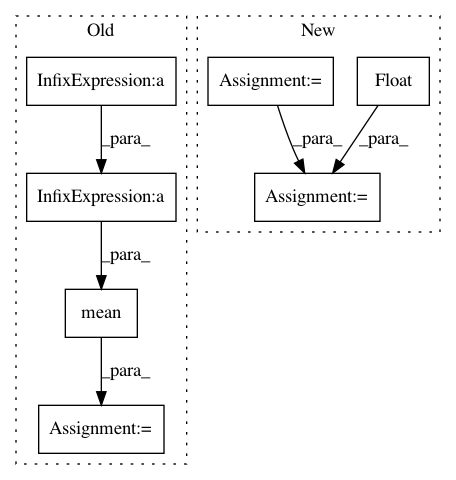

aa50234c0e3854567214a3109188ee9bedc33551,cde/BaseConditionalDensity.py,ConditionalDensity,_conditional_value_at_risk_mc_pdf,#ConditionalDensity#Any#Any#Any#Any#,221
Before Change
p = self.pdf(x_cond_tiled, y_samples).flatten()
q = exp_f.flatten()
importance_weights = p / q
cvar = np.mean(y_samples * importance_weights, axis=0) / alpha
CVaRs[i] = cvar
return CVaRs
After Change
CVaRs = np.zeros(x_cond.shape[0])
for i in range(x_cond.shape[0]):
upper = float(VaRs[i])
func_to_integrate = lambda y: y * np.squeeze(self._tiled_pdf(y, x_cond[i], n_samples_int))
integral = numeric_integation(func_to_integrate, n_samples_int, lower, upper)
CVaRs[i] = integral / alpha
return CVaRs
In pattern: SUPERPATTERN
Frequency: 3
Non-data size: 7
Instances
Project Name: freelunchtheorem/Conditional_Density_Estimation
Commit Name: aa50234c0e3854567214a3109188ee9bedc33551
Time: 2019-01-18
Author: jonas.rothfuss@gmx.de
File Name: cde/BaseConditionalDensity.py
Class Name: ConditionalDensity
Method Name: _conditional_value_at_risk_mc_pdf
Project Name: jindongwang/transferlearning
Commit Name: f0fe1d57b54b7670ad4586e19d4383db561e84e7
Time: 2019-12-16
Author: jindongwang@outlook.com
File Name: code/distance/mmd.py
Class Name:
Method Name: linear_mmd2
Project Name: jindongwang/transferlearning
Commit Name: f0fe1d57b54b7670ad4586e19d4383db561e84e7
Time: 2019-12-16
Author: jindongwang@outlook.com
File Name: code/deep/DDC_DeepCoral/mmd.py
Class Name: MMD_loss
Method Name: linear_mmd2